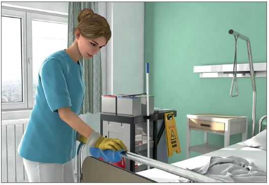
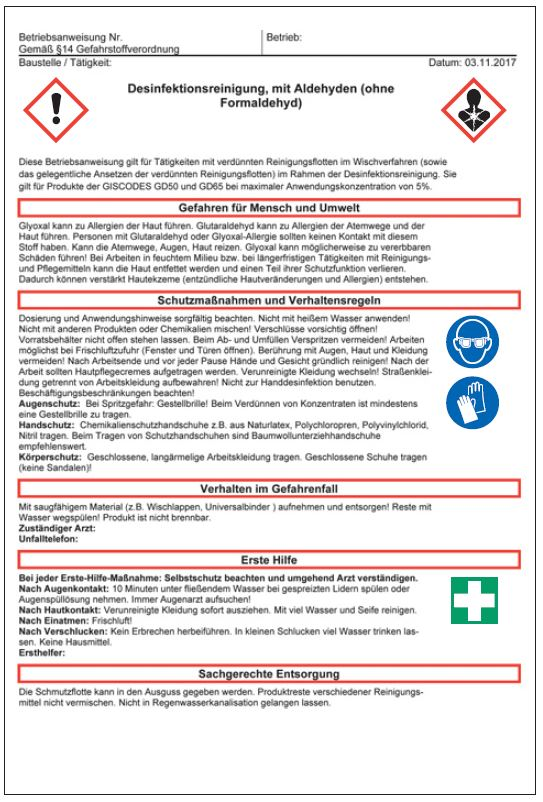

Flächendesinfektionsmittel
|
|

Gefährdungen
- Bei Tätigkeiten mit Flächendesinfektionsmittel können reizende, sensibilisierende oder ätzende Stoffe auftreten und bei Hautkontakt, Verschlucken oder Einatmen zu Gesundheitsschäden führen.
Allgemeines
- Einsatz nur von entsprechend ausgebildetem, unterwiesenem und regelmäßig geschultem Personal.
- Sprühverfahren wegen der Atemwegsbelastung vermeiden, stattdessen Wischverfahren anwenden.
- Flächendesinfektionsmittel nicht zur Händedesinfektion benutzen.
- Vorgaben zum Desinfektionsmitteleinsatz aus vorliegendem Reinigungs- und Desinfektionsplan des Auftraggebers einhalten.
- Nur geprüfte und anerkannte (gelistete) Flächendesinfektionsmittel einsetzen.

Schutzmaßnahmen
Organisatorische
Maßnahmen
- Informationen über den GISCODE im Gefahrstoffinformationssystem der BG BAU – WINGIS (www.wingis-online.de) – einholen.
- Gefahrstoffverzeichnis erstellen.
- Sichere Aufbewahrung, Lagerung und Verwendung im Objekt gewährleisten.
- Zur Herstellung von Anwendungslösungen die Herstellervorgaben einhalten (korrekte Dosierung).
- Möglichst automatische Dosiergeräte verwenden.
- Bei Handdosierung spezielle Dosierhilfen verwenden (z. B. Dosierpumpen, Dosierbeutel, Messbecher).
- Anwendungslösungen nur mit kaltem Wasser ansetzen.
- Entsprechende Betriebsanweisung erstellen und die Beschäftigten unterweisen.
- Hautschutzplan aufstellen (in Zusammenarbeit mit dem Betriebsarzt).
Persönliche Schutzausrüstung
- Beim Umgang mit Desinfektionsmittelkonzentraten, z. B. beim Abfüllen und Verdünnen, und wenn mit Aerosolbildung zu rechnen ist, Schutzbrille (Korbbrille) tragen.
- Ist mit Durchtränkung der Arbeitskleidung bei der Flächendesinfektion zu rechnen, flüssigkeitsdichte Schutzkleidung tragen, z. B. flüssigkeitsdichte Schürze.
- Hautschutz-, Hautreinigungs- und Hautpflegemaßnahmen gemäß Hautschutzplan.
Zusätzliche Hinweise zu aldehydhaltigen Flächendesinfektionsmitteln
- Formaldehyd ist als krebserzeugend und erbgutverändernd eingestuft.
- Bei der Anwendung von aldehydhaltigen Desinfektionsmitteln kann je nach Einsatzbedingungen der Arbeitsplatzgrenzwert überschritten sein.
- Für ausreichende Lüftung sorgen.
- Bei möglichen Überschreitungen des Arbeitsplatzgrenzwertes adäquaten Atemschutz tragen.
- Von Zündquellen und heißen Oberflächen fernhalten.
Zusätzliche Hinweise zu alkoholischen Flächendesinfektionsmitteln
- Arbeitsbereiche gut lüften.
- Von Zündquellen und heißen Oberflächen fernhalten.
Beschäftigungsbeschränkungen
- Jugendliche nur unter Aufsicht und zur Erreichung des Ausbildungszieles einsetzen und nur, wenn die Arbeitsplatzgrenzwerte eingehalten werden.
- Schwangere Frauen dürfen Tätigkeiten mit Gefahrstoffen nur ausführen, wenn der Arbeitsplatzgrenzwert unterschritten ist.
Arbeitsmedizinische Vorsorge
- Arbeitsmedizinische Vorsorge nach Ergebnis der Gefährdungsbeurteilung veranlassen (Pflichtvorsorge) oder anbieten (Angebotsvorsorge). Hierzu Beratung durch den Betriebsarzt.
07/2021